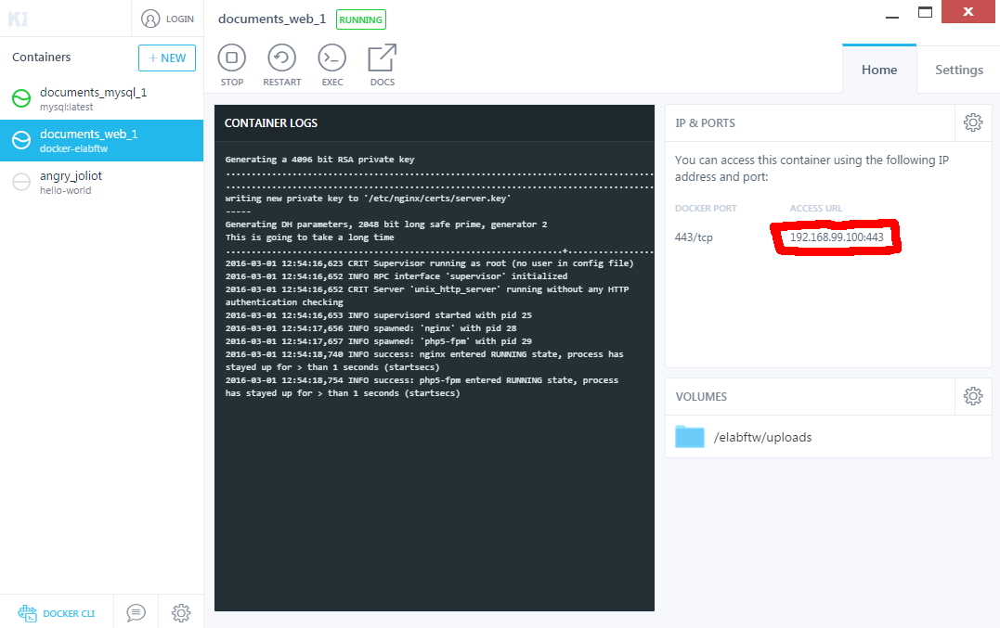

Install on Windows (in Docker)¶

I am very sad that you have to use malware for your computing needs. You should try your best to convince whoever is stopping you from using a free operating system that they are wrong, whatever reasons they invoke.
That being said, we’re here to install eLabFTW on Windows. So let’s get to it.
Follow the two steps below to install eLabFTW on your system:
- Read the documentation and install Docker on Windows
- Install eLabFTW in Docker
Once the containers are running, you can start Kitematic to check what IP address you need to use to access eLabFTW.
